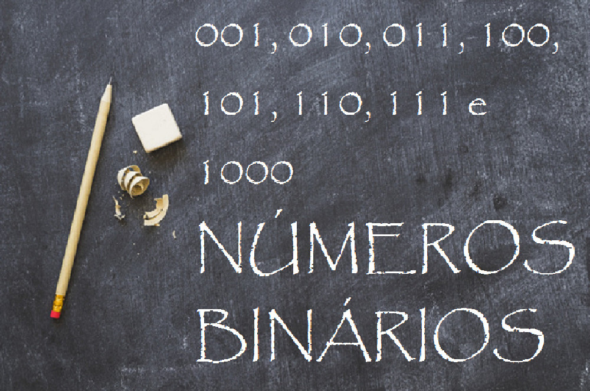
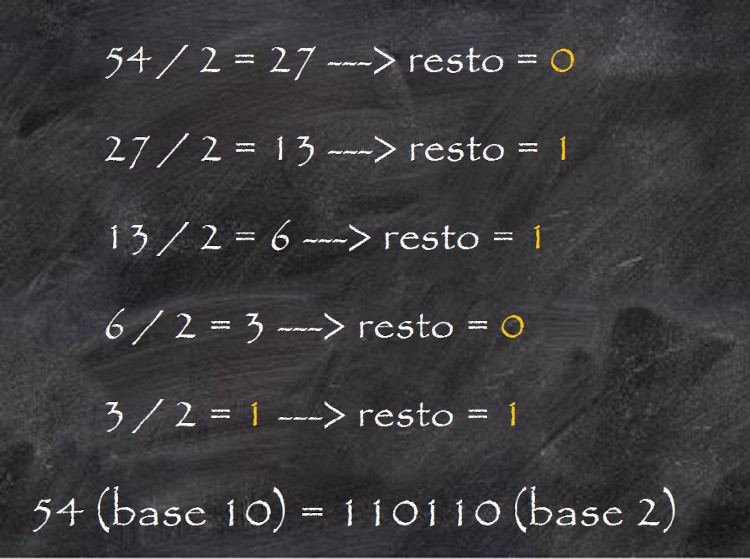
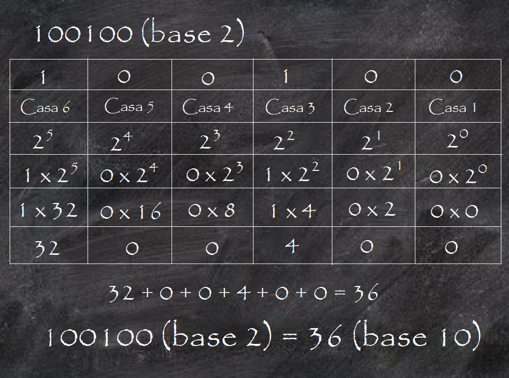

Números Binários
O que são, para que servem e como calculá-los
Os números binários são um sistema baseado em dois algarismos, 0 e 1, que formam a linguagem da informática internacional.

Os números binários formam um sistema matemático usado por computadores para criar informações. Ele é composto por uma base de apenas dois algarismos: 0 e 1. Por tanto, são formadas sequências e, a partir delas, são formadas letras, palavras, textos, cálculos. Nesse mesmo sentido existem outros sistemas numéricos. Por exemplo, o hexadecimal utiliza 16 algarismos, o octal possui 8 algarismos, o decimal possui 10 algarismos.
A primeira versão desse sistema surgiu no século III a. C. O matemático indiano Pingala apresentou uma sequência numérica usando 8 algarismos, sendo 1 e 0 símbolos modernos. Então, a aplicação foi feita desse modo: 001, 010, 011, 100, 101, 110, 111 e 1000. Posteriormente, outros matemáticos tentaram atualizar o método. O modelo mais moderno foi descrito por Gottfried Leibniz no século XVIII. E assim o utilizamos até hoje.
Dessa forma, toda mídia armazenada em discos, HDs e nos computadores é codificada a partir desse sistema. Todas essas informações, portanto, recebem uma classificação de voltagem, sendo 1 a mais alta e 0 a mais baixa. Isso tudo está ligado à posição dos números. Caso não fosse utilizado um sistema posicional, os números ficariam bagunçados impossibilitando a leitura e conversão para decimais.
Transformando números binários
Dentro dos computadores há dois níveis de tensão que correspondem aos números binários. Para simplificar o cálculo, é usada a lógica booleana, criada por George Boole. Ou seja, cada dígito dentro da maquina (0 ou 1) recebe o nome de bit (do inglês Binary Digit). Contudo, se a sequência possui 8 bits, então ela passa a ser chamada de byte (do inglês Binary Term).
Seguindo esse pensamento, uma sucessão de algarismos que formam 1.024 bytes, é chamada de kylobyte. Enquanto outra que possui 1 milhão de bytes é nomeada de gigabyte. Além disso, a Álgebra Booleana utiliza o sistema binário para cálculos lógicos e aritméticos. Assim os números binários podem indicar “sim ou não”, “verdadeiros ou falso”, “ligado ou desligado”.
Para calcular é simples. Pegamos um número de base 10 (decimal) e decompomos por 2 até não ser possível mais dividir. Com os resultados formamos um novo número de base 2. Agrupamos o último resultado seguido dos restos das divisões anteriores, do último para o primeiro. Veja:

Mas para transformar números binários em decimais separamos os dígitos por casa. Depois transformamos essas casas em expoente para o número 2, sendo o primeiro expoente da esquerda para a direita o número zero. Então, multiplicamos as potências pelos seus respectivos algarismos binários. Por fim, somamos todos os resultados. Veja:
